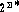
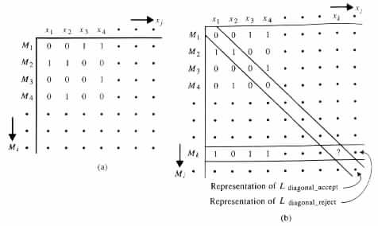
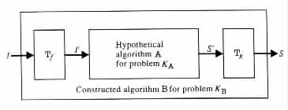
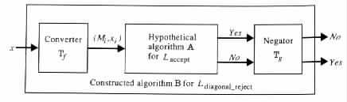
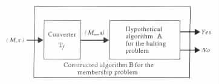
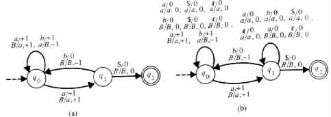
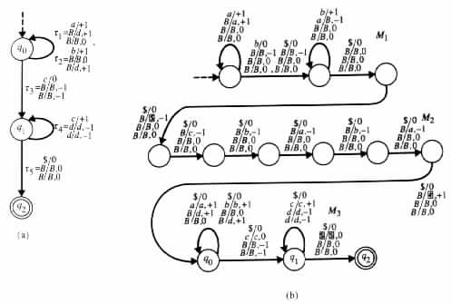
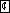
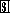
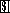

A Proof by a Generic Approach
Proofs by Reduction
The finiteness of memory and the restricted access to it, respectively, constrain the capabilities of finite-state transducers and pushdown transducers. In the case of Turing transducers, however, none of the constraints made on memory is significant, because they can all be removed and still the transducers acquire no more definition power. Yet there are languages that Turing transducers cannot decide or even accept. The intuitive explanation for this phenomenon is that each Turing transducer is a description of a language (i.e., a set of strings), which itself has a description by a string. Consequently, there are more languages than Turing transducers.
Specifically, each language over an alphabet S is a subset of S*. The set of all the languages over S is the power set , which is uncountably infinite. On the other hand, the number of Turing transducers that specify languages over S is countably infinite, because they are all representable by strings from S*.
The proof of the following theorem implicitly uses the previous observation. As with the limitations of the finite-memory programs in Section 2.4 and the limitations of the recursive finite-domain programs in Section 3.4, we here use a proof by reduction to contradiction. The variant of the technique used here is called a proof by diagonalization , owing to the employment of the diagonal of a table for choosing the language that provides the contradiction.
Convention In this chapter xi will denote the ith string in the canonically ordered set of binary strings. Similarly, Mi will denote the Turing machine that has a standard binary representation equal to the ith string, in the canonically ordered set of the standard binary representations of Turing machines. (With no loss of generality it is assumed that isomorphic Turing machines are equal.)
Theorem 4.5.1 There are nonrecursively enumerable languages, that is, languages that cannot be accepted by any Turing machine.
Proof Let Laccept be the language { (M, x) | The turing machine M accepts the string x }. The language Laccept has a table representation Taccept in which the rows are indexed by M1, M2, M3, ¼ the columns are indexed by x1, x2, x3, ¼ and each entry at row Mi and column xj holds either 1 or 0, depending on whether Mi accepts xj or not (see Figure 4.5.1(a)).
|

|
Each language L can be represented by a vector that holds 1 at its jth entry if xj is in L, and holds 0 at its jth entry if xj is not in L. In particular, the language L(Mi) is represented by the ith row in Taccept.
The approach of the proof is to find a language that corresponds to no row in Taccept, and so cannot be accepted by any Turing machine. One such option is to construct the language from the diagonal of Taccept.
The diagonal of the table Taccept is a representation of Ldiagonal_accept = { x | x = xi and Mi accepts xi }. Let Ldiagonal_reject denote the complementation { x | x = xi and Mi does not accept xi } of Ldiagonal_accept. Each Turing machine that accepts Ldiagonal_reject implies some row Mk in Taccept that holds values complementing those in the diagonal at similar locations (see Figure 4.5.1(b)). In particular, the kth digit in row Mk must be the complementation of the kth digit in the diagonal. However, the kth digit in row Mk is also the kth digit in the diagonal, consequently implying that no Turing machine can accept the language Ldiagonal_reject.
The discussion above can be formalized in the following way. For the sake of the proof assume that Ldiagonal_reject is accepted by some Turing machine M. Then there exists an index k such that M = Mk. Now consider the string xk. For xk either of the following cases must hold.
By Church's thesis a decision problem is partially decidable if and only if there is a Turing machine that accepts exactly those instances of the problem that have the answer yes. Similarly, the problem is decidable if and only if there is a Turing machine that accepts exactly those instances that have the answer yes and that also halts on all instances of answer no.
The proof of Theorem 4.5.1 together with Church's thesis imply the following theorem. The importance of this theorem stems from its exhibiting the existence of an undecidable problem, and from its usefulness for showing the undecidability of other problems by means of reducibility.
Theorem 4.5.2 The membership problem is undecidable, and, in fact, not even partially decidable for Ldiagonal_reject.
A proof of the undecidability of a given problem by means of reducibility runs as follows (see Figure 4.5.2
|

|
The proof of the following theorem is an example of a proof that uses reduction between undecidable problems.
Theorem 4.5.3 The membership problem for Turing machines or, equivalently, for Laccept is undecidable.
Proof For the purpose of the proof assume that the given problem is decidable by a hypothetical algorithm A (see Figure 4.5.3).
|

|
The algorithm B on a given input x uses a converter Tf to obtain a pair (Mi, xi) such that x = xi. Tf can find the index i for x by listing the binary strings e, 0, 00, ¼ , x in canonical order, and determining the index of x in the list. Tf can find Mi by listing the binary strings e, 0, 1, 00, ¼ in canonical order until the ith standard binary representation of a Turing machine is reached.
The output (Mi, xi) of Tf is provided by B to A. Finally B employs Tg for determining that x is in Ldiagonal_reject if A determines that x is not in Laccept, and that x is not in Ldiagonal_reject if A determines that x is in Laccept.
The result follows from the undecidability of the membership problem for the
language Ldiagonal_reject (see Theorem 4.5.2).
The previous theorem and the next one imply that there are nonrecursive languages that are recursively enumerable.
Theorem 4.5.4 The membership problem for Turing machines or, equivalently, for Laccept is partially decidable.
Proof
Laccept is accepted by a nondeterministic Turing machine similar to the universal Turing
machine M2 in the proof of Theorem 4.4.1.
Many problems, including the one in the following theorem, can be shown to be undecidable by reduction from the membership problem for Turing machines.
Theorem 4.5.5 The halting problem for Turing machines is undecidable.
Proof A Turing machine M does not halt on a given input x if and only if M does not accept x and on such an input M can have an infinite sequence of moves.
An answer no to the halting problem for an instance (M, x) implies the same answer to the membership problem for the instance (M, x). However, an answer yes to the halting problem for an instance (M, x) can correspond to either an answer yes or an answer no to the membership problem for the instance (M, x). The proof of the theorem relies on the observation that each Turing machine M can be modified to avoid the rejection of an input in a halting configuration. With such a modification, an answer yes to the halting problem at (M, x) also implies the same answer to the membership problem at (M, x).
For the purpose of the proof assume that the halting problem for Turing machines is decidable by a hypothetical algorithm A. Then an algorithm B, which decides the membership problem for Turing machines, can be constructed employing a translator Tf and the hypothetical algorithm A in the following manner (see Figure 4.5.4).
|

|
B provides any given instance (M, x) to Tf . Tf constructs from the given m auxiliary-work-tape Turing machine M an equivalent Turing machine M¥, that halts on a given input if and only if M accepts the input. Specifically, M¥ is just the Turing machine M with a "looping" transition rule of the form (q, a, b1, ¼, bm, q, 0, b1, 0, ¼, bm, 0) added for each nonaccepting state q, each input symbol a, and each combination of auxiliary work-tape symbols b1, ¼ , bm on which M has no next move. B feeds (M¥, x) to A and assumes the output of A.
The result follows from Theorem 4.5.3, showing that the membership problem is
undecidable for Laccept.
Example 4.5.1 Let M be the Turing machine in Figure 4.5.5(a).
|

|
Using the notations in the proof of Theorem 4.5.5, M¥ is the Turing machine in
Figure 4.5.5(b).
The next theorem provides another example of a proof of undecidability by means of reduction.
Theorem 4.5.6 The problem of deciding for any given Turing machine whether the machine accepts a regular language is undecidable.
Proof Consider any instance (M, x) of the membership problem for Turing machines. From (M, x) construct a Turing machine Mx that accepts { aibi | i ³ 0 } if M accepts x, and that accepts the empty set if M does not accept x.
Specifically, Mx on any given input w starts the computation by checking whether w = aibi for some i ³ 0. If the equality w = aibi holds for no i ³ 0, then Mx rejects w. Otherwise, Mx simulates the computation of M on input x. In the latter case, Mx accepts w if it determines that M accepts x, and Mx rejects w if it determines that M rejects x.
Consequently, Mx accepts a regular language (which is the empty set) if and only if
M does not accept x. The result follows from the undecidability of the membership
problem for Turing machines (see Theorem 4.5.3).
Example 4.5.2 Let M be the Turing machine given in Figure 4.5.6(a).
|

|
M1 checks that the given input is of the form aibi for some i ³ 0. M2 stores the string

x in the first auxiliary work tape. M3 is just M modified to read its input from the first
auxiliary work tape.
and  are the symbols used in the first auxiliary work tape representing the endmarkers ¢
and $, respectively.
The universe of the undecidable problems includes numerous examples. For many of these problems the proof of undecidability is quite involved. The selection that has been made here should be appreciated at least for the simplification that it allows in introducing the concepts under consideration.